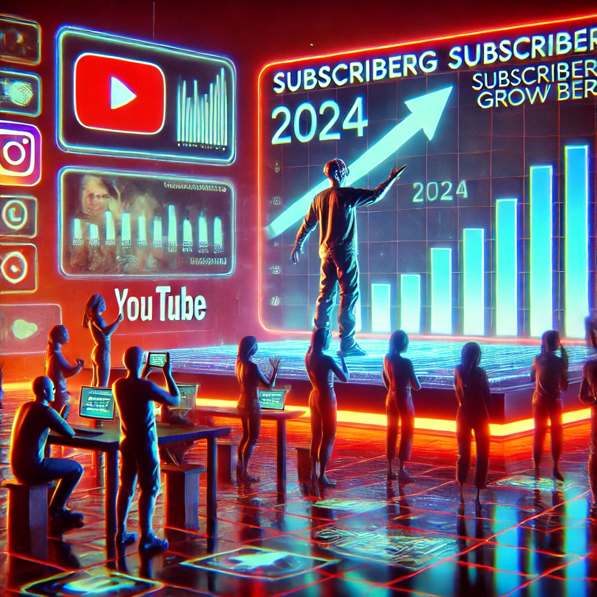

How to Get More Subscribers on YouTube in 2024: A Comprehensive Guide

If you're aiming to grow your YouTube channel quickly in 2024, you've landed in the right place. This year brings new challenges and opportunities for creators, from the rising importance of short-form content to leveraging artificial intelligence in ways that save time without sacrificing authenticity. In this updated guide, we'll explore proven strategies, recent trends, and new YouTube features to help you gain subscribers and grow your channel sustainably.
Mastering YouTube Growth in 2024: Key Strategies
1. Create High-Quality, Targeted Content
No matter how many new features YouTube introduces, the cornerstone of channel growth remains creating high-quality, engaging content. In 2024, with over 720 hours of content uploaded every minute, it's crucial that your videos stand out. Here's how to ensure your content resonates:
- Know Your Audience: Use tools like YouTube Analytics, Google Trends, and social listening platforms to understand your audience's demographics and preferences. Create content that speaks directly to their needs and interests.
- Authenticity Over Perfection: Today's audiences value authenticity. Relatable, genuine content often outperforms overly polished, scripted videos. A great example is Emma Chamberlain, whose unfiltered vlogs have amassed millions of subscribers due to her raw authenticity.
2. Embrace Short-Form Content: The Rise of YouTube Shorts
YouTube Shorts is no longer just an experiment—it has become a juggernaut, now amassing over 50 billion daily views. If you're not incorporating Shorts into your strategy, you're missing out on a massive opportunity for growth. Here's why and how to do it effectively:
- Use Shorts to Drive Viewers to Your Main Channel: Shorts can act as a funnel to bring new audiences to your long-form content.
- Consistency is Key: Uploading 2-3 Shorts per week is ideal for keeping your audience engaged without overwhelming them.
3. Leverage AI Responsibly for Content Creation
Artificial Intelligence has evolved to become a powerful tool in 2024 for content creators. While it can save time, it's important to strike a balance between AI assistance and maintaining a personal touch:
- AI Tools for Scriptwriting and Editing: Platforms like ChatGPT or Jasper AI can help you brainstorm video scripts or refine your content ideas, but ensure you add your personal spin.
- Automating Thumbnails and Metadata: AI tools such as Canva AI or Tubebuddy's AI assistant can create eye-catching thumbnails and suggest optimal video tags.
4. Adopt a Balanced Upload Schedule
Consistency is key, but quality is what keeps viewers coming back. In 2024, the trend is shifting away from daily uploads in favor of a more sustainable approach that allows for high-quality production.
- Find Your Sweet Spot: Aim for 1-3 well-produced videos per week, supplemented with daily or weekly Shorts.
- Engage with Your Community: Use YouTube's Community Tab and live-streaming features to connect with your viewers in real-time.
5. Collaborate with Other Creators
Strategic collaborations can be a game-changer for channel growth. Collaborate with creators in your niche or explore new genres to reach new audiences:
- Cross-Niche Collaborations: Don't limit yourself to your niche. A fitness creator could team up with a healthy-eating YouTuber to introduce their content to a new audience.
- Collaborative Livestreams: Use YouTube's tools for joint livestreams or handles (@username) to create engaging crossovers.
6. Optimize for YouTube SEO and Discovery
Search engine optimization (SEO) on YouTube remains crucial for getting your videos discovered. In 2024, it's about creating engaging content that educates and entertains:
- Utilize Tools like TubeBuddy or vidIQ: These platforms help uncover trending keywords and optimize your video titles, descriptions, and tags for better ranking.
- Include Timestamps, Closed Captions, and Chapters: These elements help make your videos more accessible and searchable.
7. Leverage New YouTube Features
YouTube constantly evolves, and staying ahead means taking advantage of the latest features:
- YouTube Handles: Customize your @username for better discoverability.
- Monetizing YouTube Shorts: Participate in the Shorts Fund or incorporate shoppable links in your short-form content.
- Multiformat Playlists: Mix long-form videos, Shorts, and podcasts into a single playlist for a more dynamic viewing experience.
8. Ethical Growth and Sustainable Practices
As the creator economy matures, it's important to think long-term and build trust with your audience. Chasing short-term trends may bring a quick spike in subscribers, but maintaining them requires a foundation built on trust and value:
- Transparency is Key: Always disclose sponsorships and affiliate relationships clearly to build trust with your viewers.
- Avoid Clickbait: Misleading titles and thumbnails may boost views temporarily, but they can damage your reputation in the long run.
"The journey to success on YouTube isn't about quick hacks—it's about providing long-term value and staying passionate about your content. Stay curious, keep adapting, and enjoy the ride!"
Conclusion: Thrive on YouTube in 2024
Growing your YouTube channel in 2024 requires a holistic approach that combines quality content, algorithm optimization, community engagement, and ethical practices. As trends shift toward short-form content, AI-driven tools, and cross-platform promotion, creators must remain flexible and adaptive. Here's a quick summary of the most effective strategies for success:
- Create high-quality, audience-focused content that balances authenticity with production value.
- Embrace YouTube Shorts for quick growth and audience acquisition.
- Leverage AI tools without losing your personal touch.
- Collaborate with other creators and engage deeply with your community.
- Stay consistent, but prioritize quality over quantity.
- Use YouTube's latest features to gain visibility and revenue.
- Always focus on sustainable, ethical growth.
The journey to success on YouTube isn't about quick hacks—it's about providing long-term value and staying passionate about your content. Stay curious, keep adapting, and enjoy the ride!